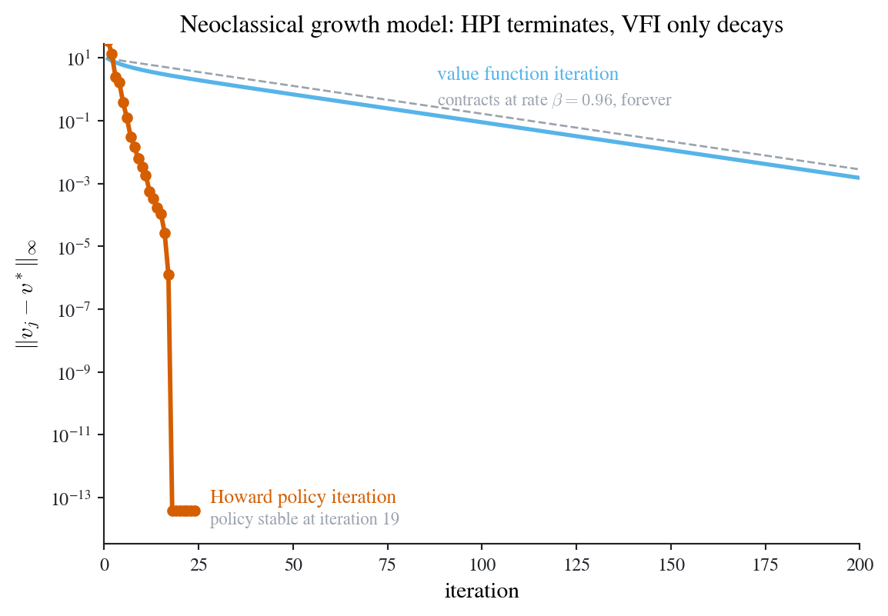

Value function iteration and Howard policy iteration, and their error paths
def vfi(u, v0, iters):
"""Value function iteration: v_{j+1} = max_{k'} { u + beta v_j }."""
v, path = v0.copy(), []
for _ in range(iters):
# The whole Bellman operator is this one line: `u + BETA * v[None, :]` forms
# r_a + beta P_a v_k for every state-action pair at once, and the row-wise max
# is the component-wise maximization. Infeasible k' carry u = -inf, so the max
# is already a CONSTRAINED maximization.
v = np.max(u + BETA * v[None, :], axis=1)
path.append(v.copy())
return np.array(path)
def hpi(u, v0, iters):
"""Howard policy iteration: greedy improvement, then EXACT policy evaluation.
Starting from a value rather than a policy, the loop improves first and evaluates
second, so iteration k returns v_{pi_{k+1}}.
"""
v, path = v0.copy(), []
for _ in range(iters):
pol = np.argmax(u + BETA * v[None, :], axis=1) # improvement
# Assemble r_pi and P_pi from the greedy policy: under a deterministic policy
# P_pi is a 0/1 selection matrix with one entry per row, which is what makes
# the solve below cheap.
r_pi = u[np.arange(NK), pol]
P_pi = np.zeros((NK, NK))
P_pi[np.arange(NK), pol] = 1.0
# Exact evaluation: solve (I - beta P_pi) v_pi = r_pi outright rather than
# iterating it. That solve is the Newton-like step in policy space.
v = np.linalg.solve(np.eye(NK) - BETA * P_pi, r_pi)
path.append(v.copy())
return np.array(path)
u = ncgm_payoff()
v0 = np.zeros(NK)
v_star = vfi(u, v0, 2500)[-1] # converged reference
n_v, n_h = 220, 24
err_v = np.max(np.abs(vfi(u, v0, n_v) - v_star), axis=1)
err_h = np.max(np.abs(hpi(u, v0, n_h) - v_star), axis=1)
floor = 1e-14
err_v, err_h = np.maximum(err_v, floor), np.maximum(err_h, floor)
fig, ax = new_ax(6.6, 4.4)
ax.semilogy(np.arange(1, n_v + 1), err_v, color=COL["sky"], lw=2.0, zorder=4)
ax.semilogy(
np.arange(1, n_h + 1), err_h, color=COL["vermilion"], lw=2.2,
marker="o", ms=4.5, zorder=5,
)
# the theoretical VFI rate: error falls by exactly beta each sweep
ax.semilogy(
np.arange(1, n_v + 1), err_v[0] * BETA ** np.arange(n_v),
color=GREY, lw=1.0, ls="--", zorder=2,
)
ax.set_xlim(0, 200)
ax.set_ylim(floor / 3, err_v[0] * 3)
ax.set_xlabel("iteration")
ax.set_ylabel(r"$\|v_j - v^*\|_\infty$")
label_at(ax, 88, 3.0, "value function iteration", color=COL["sky"], fontsize=9.5)
label_at(ax, 88, 0.45, r"contracts at rate $\beta=0.96$, forever", color=GREY, fontsize=8.5)
label_at(ax, 28, 1e-13, "Howard policy iteration", color=COL["vermilion"], fontsize=9.5)
label_at(ax, 28, 2e-14, "policy stable at iteration 19", color=GREY, fontsize=8.5)
ax.set_title("Neoclassical growth model: HPI terminates, VFI only decays")
# The figure's central claim, asserted rather than eyeballed: HPI really does reach
# VFI's fixed point, to machine precision, inside the 24 iterations plotted. If this
# ever stops holding, the book fails to render rather than shipping a false figure.
assert np.max(np.abs(hpi(u, v0, 20)[-1] - v_star)) < 1e-12, "HPI missed v*"
plt.show()